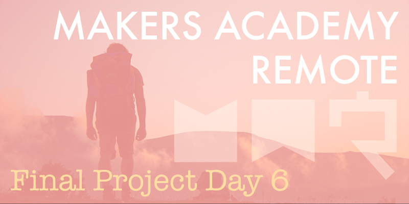

After the low points of the past week today has been a refreshingly productive and enjoyable day.
All other final project groups consist of either four or five members, and after removing a member of our own group yesterday we're now left with only three members. While the morale of the three of us is greatly improved from last week, we're very aware of the size of our team compared with the others, and were initially slightly concerned as to whether we could operate effectively with only three people.
Thankfully today has been an incredibly productive day that's given us the confidence that we can still complete the project as a smaller group. Progress has still been focused on building out the structure of the Rails app, and this is expected to be the case for some time yet. Early in the project we considered adding an AngularJS front end to our app, but in light of recent events we'll stay to Rails only to keep things simple.
An interesting point is that now we're a team of three it's difficult to pair program, as there's always a spare person. I expect that later into the project we might begin to operate as a pair and an individual when needed, because if we ‘mob' program as a three for the entire duration we'll likely not progress quickly enough. However programming alone is not the intention of this project, and we'll have to ensure that any work done alone is kept as sociable as possible, ensuring regular contact with the rest of the group.